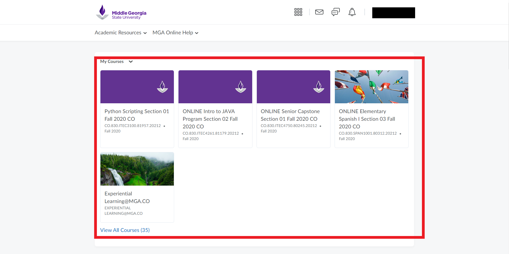
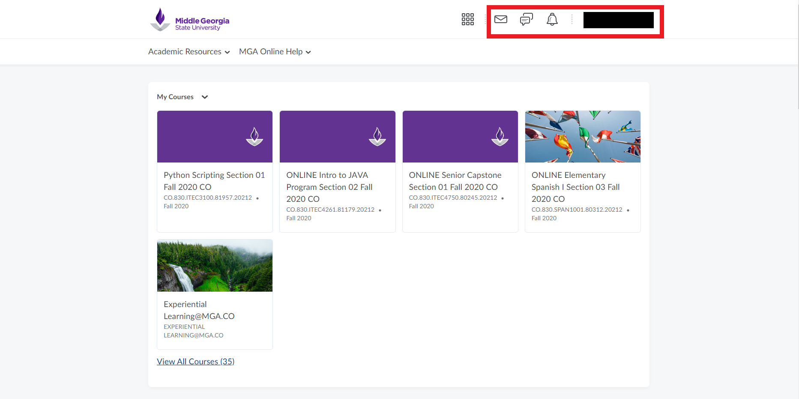
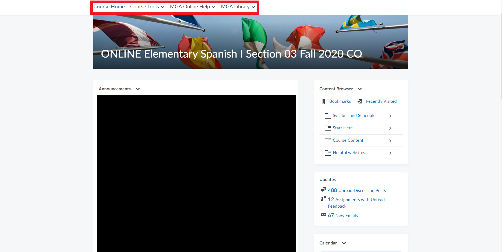
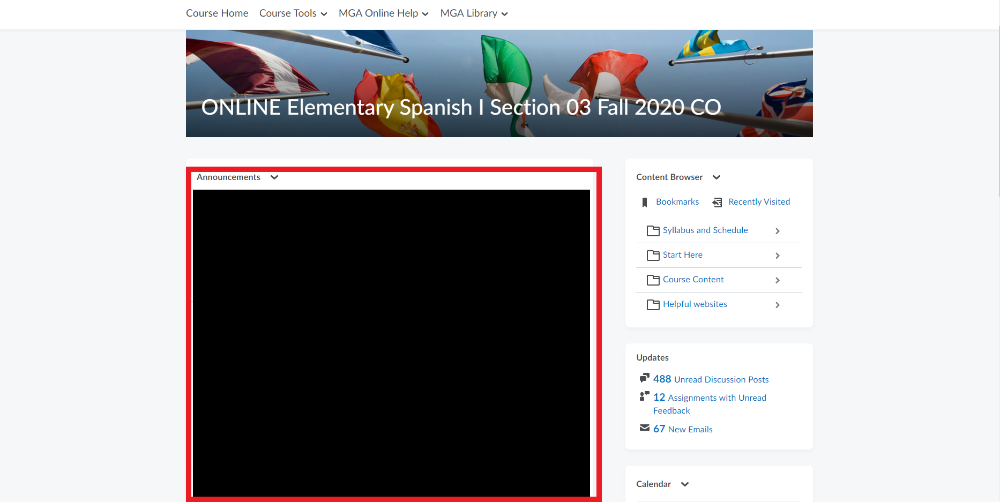
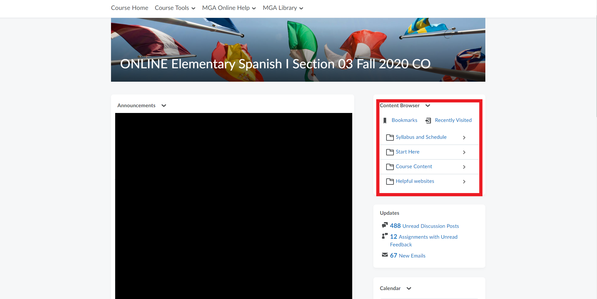
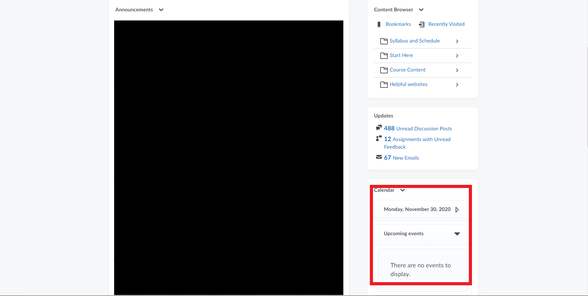

Knight Know It All
How to Navigate D2L
Watch this informational video about how to navigate D2L.
Also, below are some step-by-step guides if the video wasn't enough!
Step 1:
Once the student has successfully logged in to the D2L system, they will arrive on the D2L main page where their current or most recent courses will be shown in the form of tiles. These are the pinned classes that the student is actively enrolled in. Once a class closes it will be unpinned from this section.
Step 2:
Along the top of the main page in D2L is where the student can check their D2L email which will be showcased in another video on the Knight Know It All page, notification alerts, subscription alerts, and the student can edit their profile as well.
Step 3:
When the student selects a course from the pinned options, they will be taken to that course’s page where they will be greeted by three drop-down menus and five sections that they can interact with. There is also a “Course Home” button that will take the student back to the main page of the selected course. The three drop-down menus are course tools, MGA online help, and the MGA library while the five sections on the main page are the announcements for the course, the content browser, updates for the student on what is happening in the course, the calendar, and student support contacts.
Announcements
The student can utilize the announcements section to see any announcements that the professor of the course may have posted such as assignment due date changes, class cancellations, etc.
Content Browser
The student can view the content browser to see all the content posted for the course such as the syllabus, course schedule, assignments, PowerPoints, etc.
Calendar
The calendar section shows the student the closest upcoming events such as assignments that are due to keep the student informed ahead of time.
The student should also feel free to explore deeper into D2L to ensure that they acquire even more knowledge of how to navigate the system and their courses!